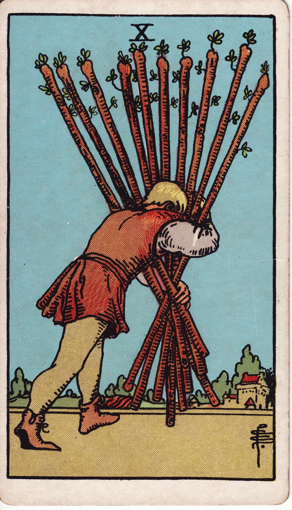
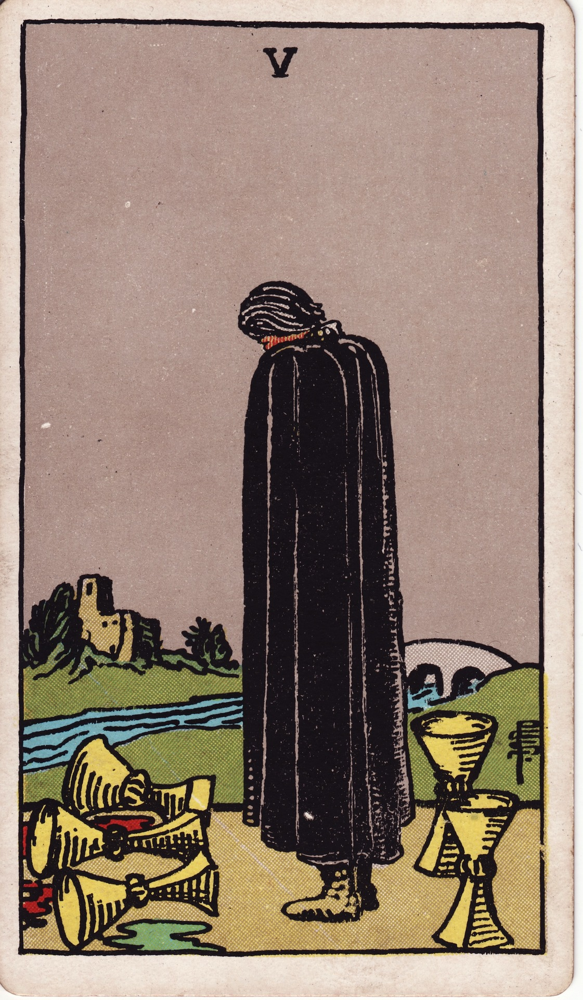
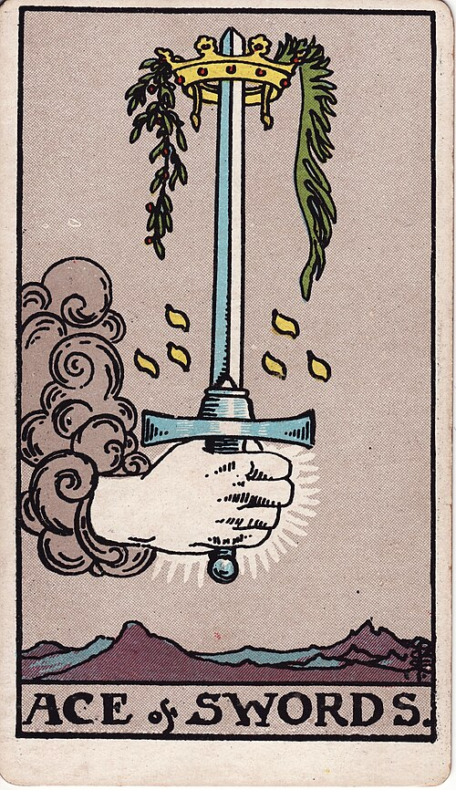

Lesson 10 · Tarot
Eight lessons taught you the cards and two drills put all seventy-eight into memory. This one puts them to work: a question, three cards dealt to named positions, and a reading spoken out loud — the first full reading of the course.
By the end of this page you have given your first complete reading: a real question, three cards from your own deck, and a story told across them that you can justify card by card. The idea that makes it work is small — a spread adds nothing to the cards themselves, it only decides what each card's sentence is about — and it is the same idea that will carry the Celtic Cross in the next lesson.
Everything so far has been about single cards: what one picture says, and why. A reading, though, is rarely one card. You lay several, and each lands in a position — a slot you named in advance, such as "the past" or "the obstacle". The card supplies the meaning you memorized; the position tells you which part of the question that meaning describes. Think of it as grammar: your drills gave you a vocabulary of seventy-eight words, and a spread is the sentence structure you speak them into — the same word does different work as subject or object, and the same card does different work in "past" than in "advice". Nothing about the card itself changes, only what it is talking about.
Laying cards into positions is as old as tarot divination itself — which is to say, not very old, and printed from the start. The surprising part is their size: every published method for over a century was enormous, while the modest three-card habit you are about to learn is the one part of this lesson with no date and no author attached.
The first book of cartomancy is Etteilla's Etteilla, ou manière de se récréer avec un jeu de cartes (Paris, 1770 — on ordinary playing cards), and it already contains the two fixtures of everything since: the "spread", a disposition of cards on the table, and separate meanings for upright and reversed cards. His 1783 Manière de se récréer avec le jeu de cartes nommées tarots is the first book of tarot divination methods (the dated bibliography; lesson 5 traced his word-lists). In English, Mathers's 1888 pamphlet announces "I shall now give several modes of laying out the cards for divination" — and his modes use twenty-six cards read in a horseshoe, twenty-one in three rows of seven, and one layout of sixty-six (The Tarot, Methods of Divination). Waite prints two methods in 1911, of ten and forty-two cards, siding with the smaller: "persons who are versed in such questions believe that the way of simplicity is the way of truth" (Pictorial Key, Part III §6).
The three-card spread itself appears in none of those books. It has no dated first printing and no named inventor that I could find — it grew out of twentieth-century practice as the beginner's antidote to exactly those giant layouts, and today it is the form most teachers start with. Brigit Esselmont of Biddy Tarot, the course's usual barometer of current practice, tells the story plainly: the books all offered "complicated Tarot spreads like the 10-card Celtic Cross", so she "went on a mission to find the very best 3-card Tarot spreads" (Biddy Tarot Podcast, ep. 10). Tarot Heritage's cartomancy pages show the same instinct applied to historic decks: three cards in a row, the centre carrying the answer and the flanks modifying it (Tarot Heritage, Spreads). When you deal three cards you are using a modern classroom form, and an honest reader says so.
The best proof that a position is a sentence waiting for its card comes from Waite himself. His ten-card method — the one the course reaches in lesson 11 — is built entirely of spoken formulas. The diviner turns each card and says the position aloud: "This covers him… This crosses him… This crowns him… This is beneath him" (Pictorial Key, Part III §7). Each formula is half a sentence, and the card completes it. A three-card spread works the same way with a lighter frame, and the frames worth memorizing first are these:
| Frame | What each position asks | Reach for it when |
|---|---|---|
| Past · Present · Future | How did this come about — where does it stand now — where is it heading if nothing changes. The third card is a trajectory, never a verdict. | The default. Any "what is going on with X" question. |
| Problem · Cause · Solution | What is actually wrong — what is feeding it — what would genuinely help. | Something is stuck and "why" matters more than "when". |
| Option A · Option B · How to choose | What each path would feel like — and what the choice between them actually turns on. | A real decision with two live options. |
These are the frames today's teachers agree on — Biddy's episode above walks all three, plus a relationship variant (you · them · the relationship itself). The frame is declared before the cards are dealt, out loud, with the question — this is the one hard rule of the lesson. Declared afterwards, the frame stops being grammar and becomes an excuse: whatever three cards appear, some assignment of "past" and "future" will flatter them into a story, and you will have learned nothing except that you can rationalize. Named in advance, the frame is a commitment the cards have to meet — which is what makes the reading falsifiable enough to be worth doing.
A reading is the single-card procedure you already own, run three times inside a frame. In full:



Take a question with real weight behind it: a project you have carried mostly alone this year has gone quiet, and you are wondering what to do with it. Frame declared: Past · Present · Future. The three cards land as in the plate.
Card by card, the memorized lines: the Ten of Wands is the venture won and turned to weight — overload, carrying it alone, nearly there. The Five of Cups is regret — real loss, mourned so completely it overlooks what remains. The Ace of Swords is clarity cutting through — the decisive idea, truth with force behind it. Now the positions, and then the join, spoken as you would say it to a friend:
"How you got here: you carried the whole thing yourself, and somewhere along the way the point of it got buried under the weight — look at him, he cannot even see the road past what he is holding. Where it stands: you are grieving what the project did not become, and the card is blunt about the blind spot — three cups spilled, two still standing behind him, and a bridge leading home that he has his back to. Where it heads if nothing changes — no, this position never means fate — where it heads is a cut: an ace is a beginning, and a sword-beginning is a decision. The crown at its point says the decision wins something. So the story reads: put down the bundle, turn around and count the two cups, and then make the one clean call you have been avoiding."
Notice that the join never re-interpreted a card to fit the neighbours — every sentence traces back to a line you drilled and a detail you can point at. The positions did all the connecting, which is the whole method and the reason the memorization came first.
Three cards will not always cooperate, and the honest moves are worth learning as early as the frames themselves.
The story will not join. Sometimes two cards speak to the question and the third sits there, unrelated. Say exactly that: "these two I can read for you; the third I would be inventing." A forced join is the beginner's most visible mistake, and declining to make one is what separates a reading from a cold-read. The mission of this course is a reading you can justify — a card you cannot justify gets named as such, not decorated.
A trump lands. One trump among suit cards is the loud card: it says this question is bigger than its afternoon-sized frame (the trumps sheet calls this the register). Read it normally in its position, then say the extra sentence: "and the Tower here means this is not a small snag — something structural is coming down."
The urge to redraw. An uncomfortable card is not a misdeal, and if you let yourself redraw, every reading silently becomes "deal until flattered", and the tool stops telling you anything. One deal per question; a new question earns a new deal.
Cards genuinely do land upside down, and assigning them separate reversed meanings is as old as the very first cartomancy book — Etteilla was printing upright and reversed lists in 1770, and Waite prints "Reversed" lines for every card in 1911 (Pictorial Key, Part III §3). This course parks them all the same: many strong readers work uprights-only, the seventy-eight meanings you just memorized are the foundation reversals would sit on, and doubling the vocabulary now would trade fluency for coverage. They are set aside as an extra for after the course — turn reversed cards upright without ceremony, and if anyone asks, say the deck is being read uprights-only, which is a recognized way to read, not a shortcut.
Fifteen minutes, and this time it is the real thing rather than an exercise.
One attempt per question, no scrolling back up.
The frame — Past · Present · Future, or another — gets chosen and said aloud…
Declared in advance, the frame is a commitment the cards have to meet. Declared afterwards, it becomes a way to flatter whatever appeared — any three cards can be rationalized into some order, which is exactly why the rule exists.
Etteilla printed the first tarot divination methods in 1783, Mathers followed in 1888, Waite in 1911. Their published layouts…
Mathers's methods use 26, 21 and 66 cards; Waite's two run to 10 and 42. The three-card spread has no dated first printing at all — it is the modern classroom form, and the lesson labels it that way.
Blind, from the drill. Past — Eight of Pentacles. Present — Nine of Swords. Future — Six of Swords. Speak the three lines, then pick the join.
The craftsman at his coins is apprenticeship; the figure upright in bed is worry at its 3 a.m. size, not contentment; and the ferry reaches a far shore with the swords still standing in the boat — the trouble travels too.
The Tower lands in the Present of a three-card spread about a stalled job hunt. What does the trump change?
A trump raises the register of the whole question: the stall is not a scheduling snag but something structural. The frame stays, the deal stands — you read the card in its position and add the one extra sentence.
Blind from lesson 9: Temperance. Say the scene and the line, then pick the match.
The winged angel pours water between two cups with one foot in the pool and one on land — moderation and blending. The loose chain belongs to the Devil, one card later in the sequence.
Read Tarot Heritage's two short cartomancy pages, Preparing to Read and Spreads — a historian's version of exactly this lesson, including the pair-reading exercise this course skipped and a three-card style where the centre card carries the advice. Then read Waite's own two pages, The Art of Tarot Divination and An Ancient Celtic Method, and just notice the ten spoken formulas — lesson 11 walks that spread with your deck, and you will already know its grammar.
I am your teacher here — ask me things. This is the lesson where the course turns from learning cards to using them, and the first readings raise questions no page can pre-answer. Some good ones to throw at me:
“Deal a practice question and check my join sentence by sentence.” · “What do I do when all three cards feel negative?” · “Can I read the same question again a week later?” · “Which frame fits a question about another person?” · “I keep missing the same cards in the drill — quiz me on those.” · “Make the honest case for and against reversals, so I can decide later.”